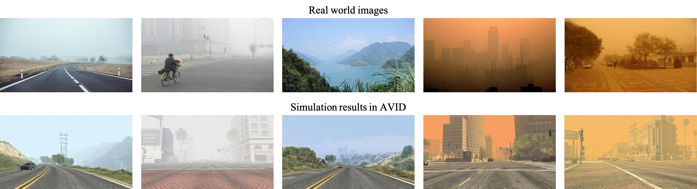
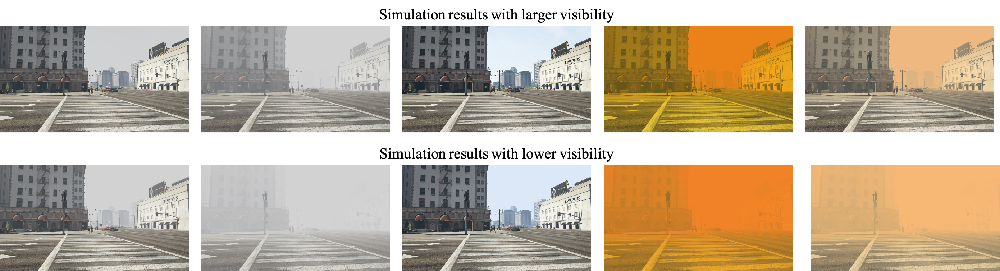
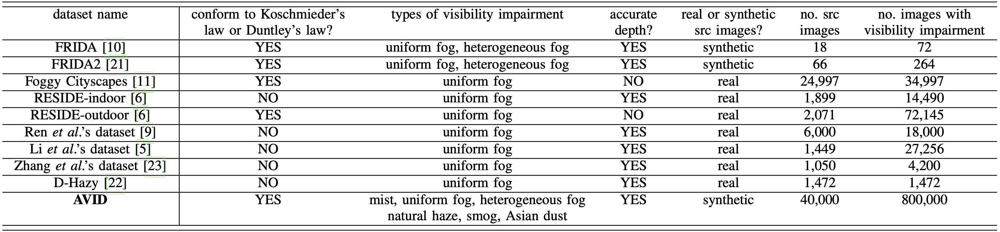

|
Simulation of Atmospheric Visibility Impairment Lin Zhang1, Anqi Zhu1, Shiyu Zhao1, Shengjie Zhao1, Yicong Zhou2 1 School of Software Engineering, Tongji University, Shanghai, China 2 Department of Computer and Information Science, University of Macau, China |
Introduction
This is the website for our paper "Simulation of Atmospheric Visibility Impairment".
Abstract
Examples in AVID
 Comparision with Datasets Related to Atmospheric Visibility Impairment Simulation
Source Codes and Data
Get the code and data. extract code: xhtq
Here are video examples of AVID:
Last update: Dec. 1, 2020